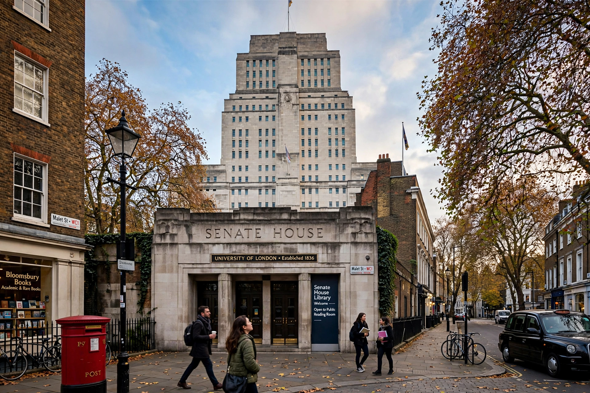

| University of London | |
| Established | 1836 (royal charter) |
|---|---|
| Type | Public research university; federal university |
| Location | London, England, UK |
| Administrative HQ | Senate House, Bloomsbury |
| Chancellor | The Princess Royal (Anne) |
| Students | About 175,000+ across member institutions, plus distance learners in ~190 countries |
| Member institutions | 17 (including UCL, King's College London, LSE) |

The University of London is a federal public research university located in London, England, United Kingdom. Established by royal charter in 1836 as a degree-awarding examining board, it became a federation of London colleges and institutes. It is the third-oldest university in England and was the first in the UK to admit women to degrees (1878) and to appoint a woman as its head of university governance. Counting students at its member institutions and its worldwide distance-learning programs, it is among the largest universities in the United Kingdom by enrollment.
The university was created to examine and award degrees to students of affiliated colleges regardless of religion — a deliberate contrast with Oxford and Cambridge, then restricted to Anglicans. Its founding colleges were University College London (founded 1826) and King's College London (1829). In 1858 it pioneered external degrees, letting students anywhere in the Empire study for London qualifications — the origin of today's University of London Worldwide programs, through which figures such as Nelson Mandela studied. In 1900 it was reconstituted as a federal teaching university. Its Art Deco headquarters, Senate House (1937), designed by Charles Holden, is said to have inspired the Ministry of Truth in George Orwell's Nineteen Eighty-Four.
The federation comprises 17 self-governing member institutions, including UCL, King's, the London School of Economics, Queen Mary, Royal Holloway, SOAS, Birkbeck, Goldsmiths, the Royal Academy of Music, and specialist institutes; since 2018 members may also hold their own degree-awarding powers while remaining in the federation. Central services include Senate House Library and the University of London Institute in Paris. Alumni include numerous heads of state, Nobel laureates, and figures such as Mahatma Gandhi (law, via UCL) and John Snow.